1.4 Cloud Computing
This training module was developed by Timothy M. Weigand, Alexis Payton, Jessie Chappel, and Julia E. Rager.
All input files (script, data, and figures) can be downloaded from the UNC-SRP TAME2 GitHub website. Additional training materials and access to accounts with $500 credit can be found though the NIH Cloud Lab.
Introduction to Training Module
Traditionally, computing operations (including data analyses and visualizations) have been performed using on-premises infrastructure on local computers. This approach requires organizations to continuously update software, manage data privacy and storage, and pay for hardware and platforms regardless of whether demand fluctuates. Gaining in popularity over recent years, cloud computing provides a flexible and scalable solution to many of these challenges.
At the core of cloud computing are two fundamental components: storage and compute. Cloud storage allows organizations to save and retrieve data remotely, eliminating the need for on-premises hardware. Major cloud providers offer scalable object storage solutions (e.g. AWS S3, Google Cloud Storage, and Azure Blob Storage) which provide durable and secure storage for datasets, models, and results of any size. For compute, cloud platforms provide virtual machine services that allow users to run analyses on demand, provisioning servers with customizable CPU, memory, and storage configurations and paying only for the resources they use. The most widely used of these services include AWS Elastic Compute Cloud (EC2), Google Compute Engine, and Azure Virtual Machines. For data science and machine learning workflows specifically, managed cloud environments such as AWS SageMaker, Google Vertex AI, and Azure Machine Learning build on these capabilities by offering fully integrated platforms for building, training, and deploying machine learning models, removing much of the overhead of configuring and managing underlying infrastructure.
In this module, we’ll explore the following concepts:
- Deployment Models
- Creating a Cloud Account
- Storing Data in the Cloud
- Computing in the Cloud
Additionally, we’ll be making use of the dataset used in the module, Data Wrangling in Excel, to walk through some of these steps. Further description of the dataset can be found there.
Introduction to Cloud Computing
Cloud computing refers to the on-demand delivery of computing services over the internet, often with pay-as-you-go pricing. Common examples of cloud-based services that you likely use in your daily life include databases (e.g., PubMed), web servers (e.g., Apache), storage (e.g., iCloud), email (e.g., Gmail), software (e.g., Microsoft 365), analytics (e.g., Ingenuity Pathway Analysis), and artificial intelligence (e.g., ChatGPT).
Some key benefits of cloud computing are:
- It defers cost by shifting the burden of building, maintaining, and powering servers to a third-party cloud provider (at least for public and hybrid clouds).
- It increases reliability in the event of a disaster or system failure. Cloud providers typically maintain multiple redundant servers so that if one becomes compromised, others can serve as backups. Providers also employ staff who are well-versed in the ever-changing landscape of cloud security and infrastructure.
- It improves scalability by allowing customers to use (and pay for) only the infrastructure their project requires. Many providers let you configure the number of virtual machines, computing power, and memory to match your needs.
- It enhances collaboration by enabling teams to access and work on shared resources virtually, regardless of location.
Traditionally, these resources were stored on premises, meaning infrastructure and data were maintained locally, either on a personal computer or entirely within an organization’s own facilities, rather than accessed through the cloud. The following section describes several deployment models that outline how computing resources can be divided between on-premises and cloud environments.
Deployment Models
Deployment models are paradigms that dictate the accessibility, management and ownership of the infrastructure. Three commonly used models are described below:
A Public Cloud is when a cloud provider makes computing resources available over the public internet. The public cloud provider is responsible for owning, managing, and maintaining the infrastructure necessary to run these services. Some public clouds are completely free, while others operate on a pay-as-you-go model, offering flexibility and scalability based on the needs of the project. Well-known public cloud providers include Amazon Web Services (AWS), Microsoft Azure, and Google Cloud.
A Private Cloud is when both the software and hardware are dedicated to a single customer or organization. The infrastructure can either be housed on-site or managed through a third-party cloud provider, but access remains restricted to that organization.
A Hybrid Cloud combines features of both public and private clouds. This model is well-suited for organizations such as federal agencies that require the protection of sensitive data within a private cloud, while still being able to use public cloud resources to share non-sensitive data with the public or partner organizations.
We’ve covered the basics of cloud computing and various applications that provide this service, but Cloud Computing in 6 Minutes provides great visuals that further describe these topics. From here, we’ll focus more on public clouds and applications that support them.
Public Cloud Providers
Amazon Web Services (AWS) leads the cloud computing market, offers the widest range of services, and has strong interoperability with third-party organizations. Other popular public cloud providers include Microsoft Azure and Google Cloud. The National Institutes of Health (NIH) offers a training program to help researchers integrate cloud computing technologies into their work through the NIH Cloud Lab, which provides guided resources for AWS, Microsoft Azure, and Google Cloud.
Another public cloud option worth noting is Binder, which creates a coding environment directly from a public GitHub repository. This allows users to interact with Jupyter notebooks and datasets housed in that repository without needing to install any software locally. Binder is particularly useful for teaching, as students and researchers can launch a fully configured environment — with data and packages already loaded — and avoid the operating system conflicts that often arise when setting up software on local computers.
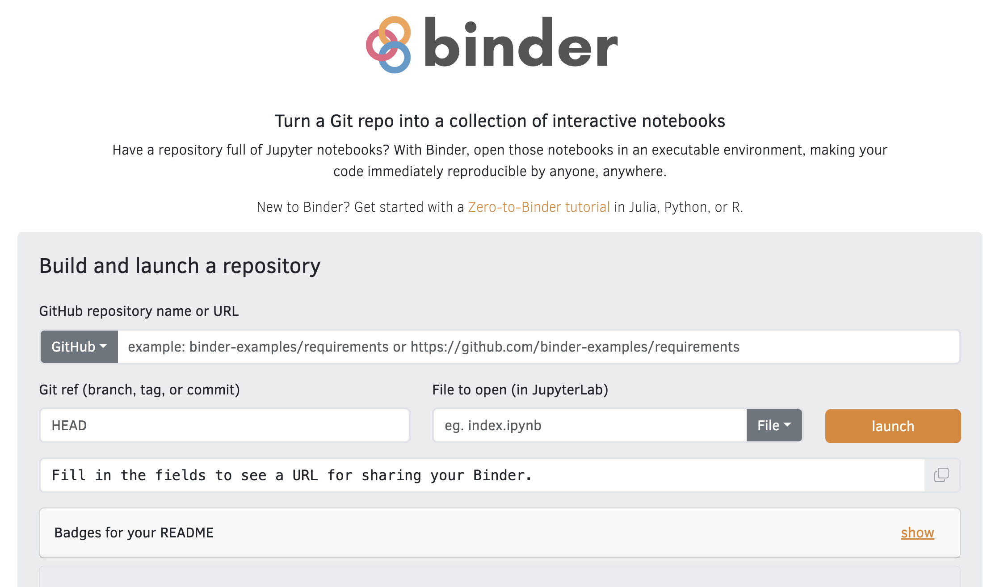
Choosing the right cloud provider depends largely on the needs of your project and organization. For a detailed comparison of features, pricing, and use cases, see AWS vs Azure vs Google: Cloud Services Comparison. For the purposes of this module, we will focus on AWS.
Creating a Cloud Account
For this tutorial, we will use AWS for our cloud provider. To get started with AWS, head to aws.amazon.com and click “Create an AWS Account”. You will be prompted to enter your email address, create a password, and provide billing information. AWS offers a Free Tier that gives new users access to a range of services at no cost for the first 12 months, which is a good way to explore the platform before committing to paid resources. Once your account is created and verified, you will have access to the AWS Management Console, where you can launch and manage cloud services. Alternatively, the NIH Strides initiative provides access to NIH Cloud Lab accounts that come with $500 in credits to explore clouding computing.
In this module, we’ll be introducing some cloud-computing related terminology that will be described throughout. A section at the end of this module has also been created to provide definitions for some of these terms in one place.
Identity and Access Management (IAM)
Identity and Access Management (IAM) is the AWS service that controls who and what has access to your AWS resources. For a full overview, see the AWS IAM Getting Started Guide.
As a personal AWS account holder, you have full access to IAM. The two things you will interact with most are Roles and Policies:
- Roles are assigned to AWS services (such as a compute instance through EC2) to grant them permission to interact with other AWS services.
- Policies define what actions are allowed. You attach policies to roles to grant specific permissions (for example, allowing an EC2 compute instance to read and write to storage via S3).
For this tutorial, you will need to create an IAM role for your EC2 instance so that it can access S3. To do this, navigate to IAM → Roles → Create Role. Select AWS Service as the trusted entity type and choose EC2 as the use case. On the next screen, search for and attach the AmazonS3FullAccess policy, give your role a name (such as ec2-s3-access), and click Create Role. You can then attach this role to
any EC2 instance at launch, or after the fact via EC2 → Actions → Security → Modify IAM Role.
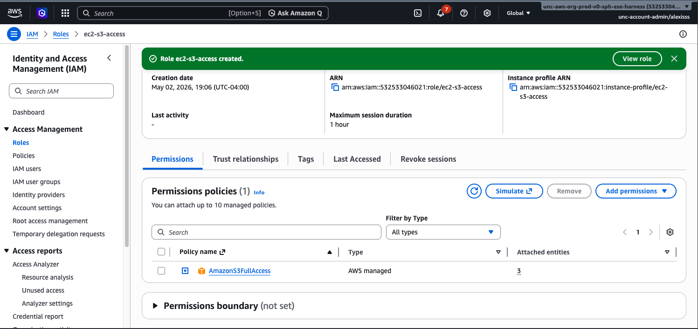
For more information see:
Storing Data in the Cloud
As the computing will be done on the cloud, the first step is to upload all necessary data to the cloud. When working in the cloud, you rent access to a remote computer (known as an instance) that runs on servers maintained by the cloud provider. Much like a personal computer, this instance has its own processing power, memory, and storage, but it exists virtually and can be started, stopped, and scaled up or down as needed. There are two types of storage associated with cloud instances: permanent storage and temporary storage. Permanent storage, via Amazon Simple Storage Service (S3), keeps your data safe and accessible regardless of whether your instance is running or not, making it ideal for long-term storage of datasets, results, and backups. Temporary storage, such as Amazon Elastic Block Store (EBS) or local instance storage, is only available while your instance is active and is used during computation to hold intermediate files and data that require fast read and write access. Note that that Amazon Elastic Block Store (EBS) is not set up independently. EBS volumes are virtual hard drives that are attached directly to compute instances, meaning they are configured as part of the EC2 instance setup process rather than through S3 or any separate service and will be covered in the next section.
1. Creating a S3 Bucket
Before uploading any data, you will need to create an S3 bucket. A bucket is simply a container in the cloud where your files and datasets will be stored, similar to a folder on your personal computer. To get started, log in to your AWS account and navigate to the S3 service, which can be found by searching “S3” in the AWS search bar at the top of the screen.
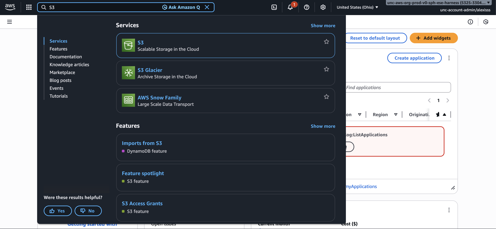
Once on the S3 dashboard, click the “Create bucket” button to begin. You will be presented with several configuration options. For most users, the following settings are recommended:
General Configuration: Select the region closest to your location as the AWS Region. Under Bucket Type, select “General purpose”, which is recommended for most use cases. For the Bucket namespace, select “Account Regional namespace (recommended)”, which ensures your bucket name is unique to your account. Finally, enter a Bucket name prefix, keeping it short and descriptive. For this dataset, we’ll name the bucket “allostatic-data”.
Object Ownership: Leave this set to “ACLs disabled (recommended)”. This means your account will own all objects stored in the bucket and access is managed through policies rather than individual file permissions.
Block Public Access: Leave “Block all public access” turned on. This ensures your data remains private and is the recommended setting for research and analysis purposes.
Bucket Versioning: This can be left as “Disabled” for most use cases. Enabling versioning allows AWS to keep a history of changes to your files, which can be useful but will increase storage costs over time.
Default Encryption: Leave this set to the default “Server-side encryption with Amazon S3 managed keys (SSE-S3)”. This ensures your data is automatically encrypted when stored, adding a layer of security without any additional configuration required.
Once you have reviewed these settings, scroll to the bottom of the page and click Create bucket. Your bucket will now appear in your S3 dashboard and is ready to receive data.
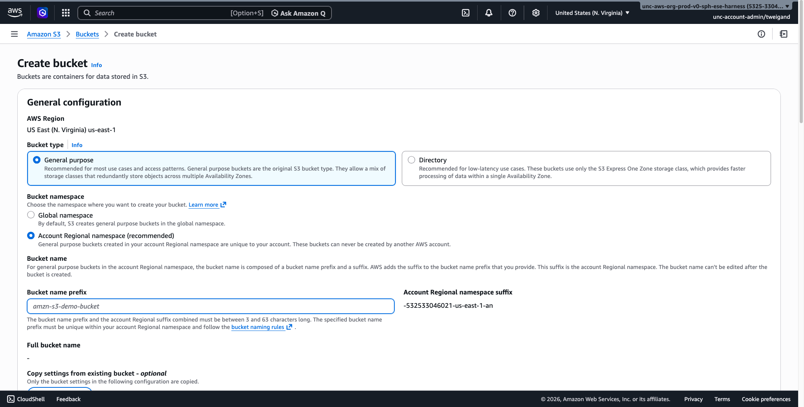
To find your bucket at any time, navigate back to the S3 service and select “Buckets” from the left-hand menu, where all of your buckets will be listed by name.
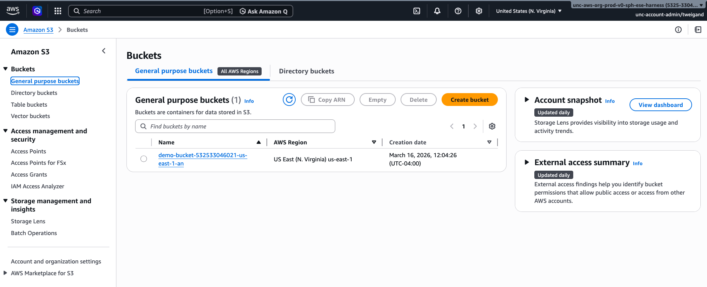
2. Uploading to an S3 Bucket
Data can be uploaded to or downloaded from S3 through the AWS Management Console or programmatically via the AWS Command Line Interface (CLI). Importantly, data stored in S3 persists independently of any virtual machine, meaning that even if you stop or terminate your compute instance, your data will remain safely stored in your account.
As a cost reference, AWS S3 storage is priced at approximately $0.023 per GB per month for standard storage (as of March 13, 2026). For example, storing a 10 GB dataset for one month would cost roughly $0.23. Data transfer and request fees may also apply, so it is worth reviewing the AWS S3 pricing page before uploading large datasets.
Uploading via the AWS Management Console
The AWS Management Console provides a straightforward point-and-click interface for uploading files and is recommended for users who are new to cloud storage or are uploading a small number of files.
- Log in to your AWS account and navigate to the S3 service by searching “S3” in the AWS search bar.
- Select “Buckets” from the left hand menu and click on the name of the bucket you created in the previous step.
- Once inside your bucket, click the “Upload” button.
- Click “Add files” to select individual files from your computer, or “Add folder” to upload an entire folder and its contents. You can also drag and drop files directly into the upload window.
- Once your files have been added, a list of the selected items will appear on the screen. Review this list to confirm the correct files have been selected.
- Leave all other settings as their defaults unless you have specific access or encryption requirements.
- Click “Upload” at the bottom of the page. A progress bar will appear showing the status of your upload. Once complete, a confirmation message will be displayed and your files will be visible inside the bucket.
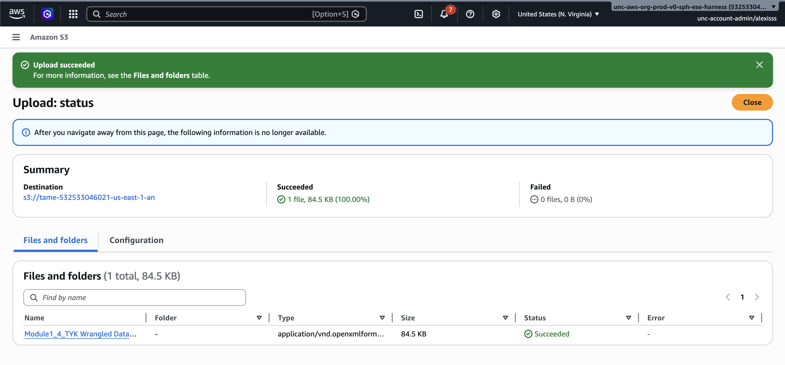
Uploading via the Command Line Interface (CLI)
For users who are comfortable working with a command line terminal, the AWS CLI provides a faster and more flexible method for uploading data, particularly for large datasets or when automating workflows. There are two ways to use the AWS CLI: through AWS CloudShell, a browser-based terminal built into the AWS Management Console that requires no setup, or through your local terminal, which requires installation and credential configuration.
Option 1: AWS CloudShell (Recommended for Organizational Accounts)
If your AWS account is managed by an organization, CloudShell is the simplest option as it comes pre-configured with your credentials, requiring no installation or setup.
To open CloudShell, log in to the AWS Management Console and click the “CloudShell icon” in the toolbar at the top of the screen (it looks like a small terminal window). A terminal will open at the bottom of your screen after a few moments.
Before uploading files from your local computer, you must first transfer them into the CloudShell environment. To do this, click the “Actions” menu in the top right corner of the CloudShell panel and select “Upload file”. Browse to the file on your computer and confirm the upload. The file will appear in the home directory of your CloudShell session and can then be moved to S3.
To upload a single file, use the following command, replacing the file name and bucket name with your own:
To upload an entire folder and all of its contents, use the following command:
To verify that your files have been uploaded successfully, you can list the contents of your bucket with the following command:
Option 2: Local Terminal
If you prefer to upload files directly from your local computer without going through CloudShell, you can install the AWS CLI and configure it with your credentials. Note that if your account is managed by an organization, you may need to contact your IT or cloud administrator to obtain credentials before proceeding.
First, install the AWS CLI by following the instructions on the AWS CLI documentation page for your operating system. Once installed, open your terminal and run the following command to configure your credentials:
You will be prompted to enter four pieces of information:
AWS Access Key ID [None]: YOUR_ACCESS_KEY
AWS Secret Access Key [None]: YOUR_SECRET_KEY
Default region name [None]: YOUR_REGION
Default output format [None]: jsonYour Access Key ID and Secret Access Key can be generated by logging in to the AWS Management Console, clicking your account name in the top right corner, and selecting Security Credentials. Scroll down to the Access keys section and click Create access key. Copy both values and enter them when prompted by aws configure.
Important: This is the only time AWS will display your Secret Access Key. If you lose it, you will need to create a new one. Never share your credentials or commit them to a code repository.
Once configured, your credentials are saved locally and will be used automatically for all future AWS CLI commands. To verify the configuration is working correctly, run the following command, which will list all S3 buckets in your account:
You can then upload files using the same commands as in Option 1, replacing the file name and bucket name with your own:
3. Downloading from an S3 Bucket
Data can be downloaded from S3 back to your local computer or to a cloud instance at any time. To download a file via the Console, navigate to your bucket, check the box next to the file you wish to download, and select “Download” from the “Actions” menu.
To download a file to your CloudShell environment, use the following command, then click the “Actions” menu in the CloudShell panel and select “Download file” to save it to your local computer:
To download a file directly to your local machine using the local CLI, use the following command:
Additional documentation can be found at AmazonS3.
Computing in the Cloud
Now that your data is stored in the cloud, the next step is to select and launch a virtual machine using Elastic Compute Cloud (EC2). EC2 allows you to rent virtual servers, referred to as instances, with configurable amounts of CPU, memory, storage, and networking capacity. You can choose from a wide range of instance types depending on the computational demands of your analysis. For example, a general-purpose instance (e.g., t3.medium) is appropriate for lightweight tasks, while a compute-optimized instance (e.g., c5.4xlarge) is better suited for parallelized or memory-intensive analyses. AWS provides a guided walkthrough that covers the available options.
1. Creating an EC2 Instance
Step 1: Navigate to EC2 Log in to the AWS Management Console and search for “EC2” in the search bar at the top of the screen. Click on “EC2” in the results to open the EC2 dashboard. From here, click the “Launch instance” button to begin the setup process.
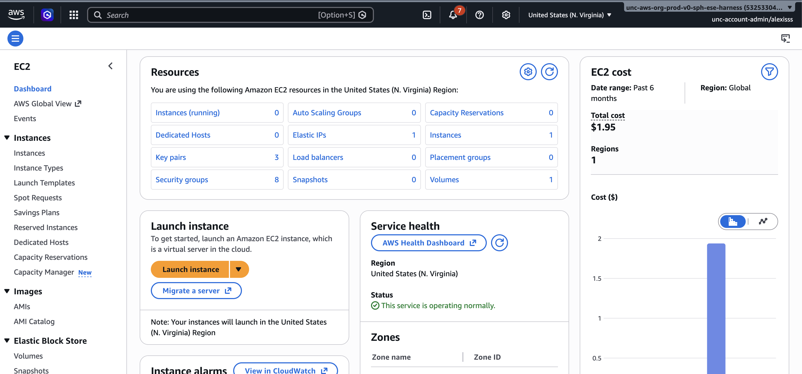
Step 2: Name Your Instance Enter a descriptive name for your instance in the “Name” field at the top of the page, such as “Allostatic Analysis”. This helps you identify it later if you have multiple instances running.
Step 3: Choose an Amazon Machine Image (AMI) An Amazon Machine Image (AMI) is the operating system and software that will be pre-installed on your instance. For general data analysis, select Amazon Linux, which is free tier eligible and comes with many common tools pre-installed. A range of other operating systems are also available including Windows, Ubuntu, and macOS, and can be browsed in the AMI selection list. For this walkthrough, select one of the free tier “Amazon Linux” as the AMI. It should already be the default option.
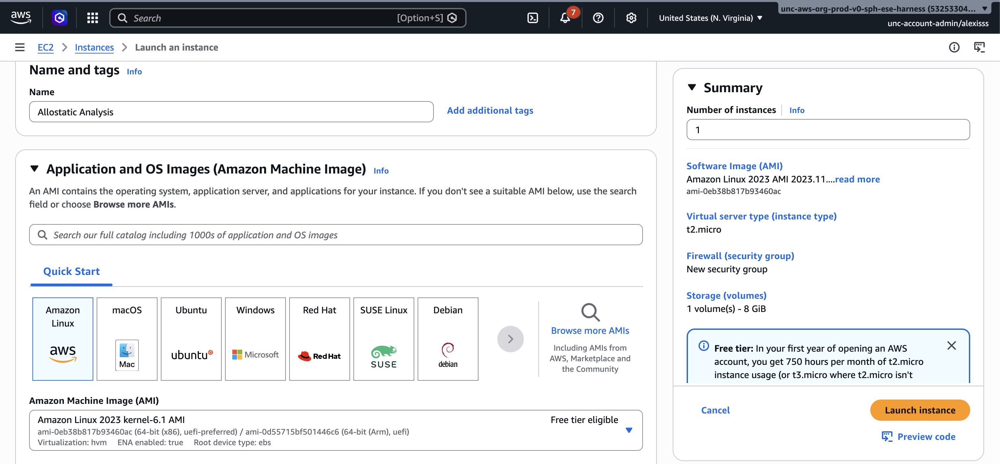
Step 4: Choose an Instance Type The instance type determines how much processing power and memory your virtual machine will have. For light data analysis tasks, t2.micro or t3.micro are free tier eligible and sufficient for getting started. For more demanding analyses involving larger datasets, consider a t3.medium or t3.large, which provide more memory and processing power at a modest hourly cost. A full list of instance types and their pricing can be found on the AWS EC2 pricing page.
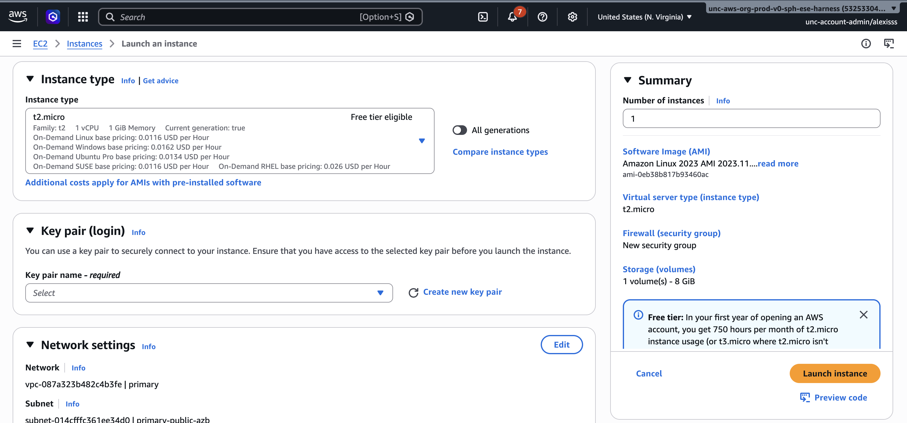
Step 5: Configure a Key Pair A key pair is used to securely connect to your instance from your terminal. Click “Create new key pair”, enter a name for your key pair, leave the settings as their defaults, and click “Create key pair”. A file with a “.pem” extension will automatically download to your computer. Store this file somewhere safe as it cannot be downloaded again and will be needed every time you connect to your instance.
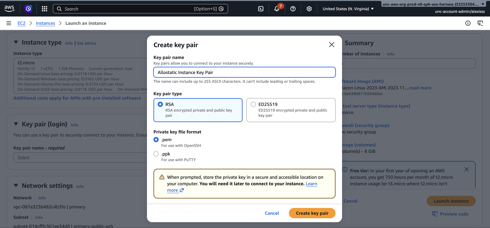
Step 6: Configure Storage Under the “Configure storage” section, you will see that a default EBS volume has already been attached to your instance. The default size is 8 GB, which is sufficient for most small analyses. If you anticipate working with larger datasets directly on the instance, increase this value by typing a new number into the size field.
Step 7: Assign an IAM Role Before launching, it is important to assign an IAM role to your instance. Without one, your instance will have no permissions to interact with any other AWS service — meaning you will not be able to read from or write to S3, or use any other AWS service from within the instance. Note that an IAM role has nothing to do with connecting to your instance via SSH; you can always SSH in with your .pem key regardless of whether a role is attached. The IAM role purely controls what AWS services the instance itself can access once it is running.
To assign a role, expand the “Advanced details” section and find the “IAM instance profile” dropdown. Select the role you created earlier (such as ec2-s3-access). If you have not yet created a role, see the IAM section of this guide before proceeding.
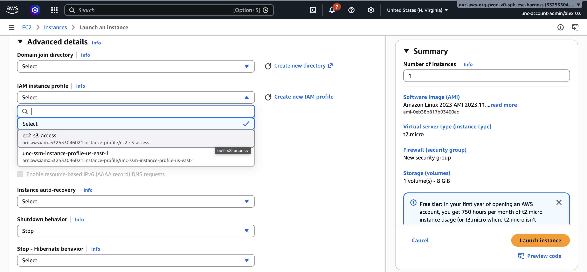
Step 8: Launch the Instance Leave all remaining settings as their defaults and click “Launch instance”. AWS will take a moment to start your instance. You can monitor its status from the EC2 dashboard — once the Instance state shows Running and the Status check shows 2/2 checks passed, your instance is ready to connect to.
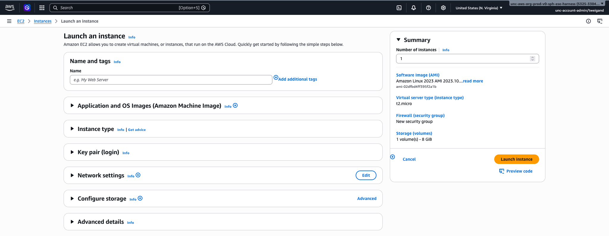
2. Connecting to an EC2 Instance
You can monitor your instance’s status by navigating back to the EC2 dashboard and selecting “Instances” from the left hand menu. Once the “Instance state” column shows “Running”, your instance is ready to use.
There are several ways to connect to an EC2 instance as described below. The right method depends on your account type and setup, but we’ll focus on connecting to an EC2 instance using the AWS Systems Manager for this module’s walkthrough.
- Option 1: AWS Systems Session Manager Session Manager allows you to connect to your instance through the AWS Management Console without needing SSH, a public IP address, or an open port. This is the recommended method for federated or organizational accounts (such as university or institutional AWS accounts) where SSH access may be restricted by VPN or firewall rules.
To connect via Session Manager:
- Navigate to “AWS Systems Manager” by searching for it in the AWS search bar.
- Select “Session Manager” from the left hand menu.
- Click “Start session”.
- Select your instance from the list and click “Start session”. A terminal will open in your browser.
Alternatively, you can access Session Manager directly from the EC2 dashboard by selecting your instance, clicking the “Connect” button, and choosing the “Session Manager” tab.
Note: Session Manager requires your EC2 instance to have an IAM role with the AmazonSSMManagedInstanceCore policy attached, and the SSM agent must be running on the instance. Amazon Linux 2 and Amazon Linux 2023 AMIs come with the SSM agent pre-installed.
Option 2: Secure Shell (SSH) SSH allows you to connect to your instance from your local terminal and control it as if you were typing directly on it. This is the most common method for personal AWS accounts and requires your “.pem” key file.
Open your terminal and navigate to the folder where your “.pem” key file was saved. First, set the correct permissions on the key file:
Then connect using the following command, replacing the IP address with your instance’s Public IPv4 address, which can be found by selecting your instance in the EC2 dashboard:
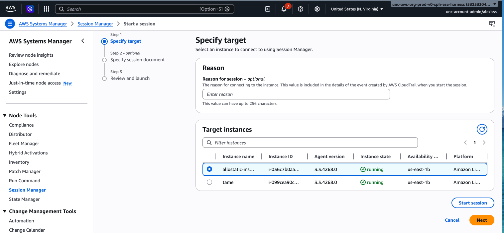
> Note: If you are using an Ubuntu AMI, replaceec2-user with ubuntu. For other AMIs, the default username may vary — check the AMI documentation if you are unsure.
Option 3: EC2 Instance Connect (Browser-Based) EC2 Instance Connect allows you to connect directly from your browser without needing a .pem key file. This is a convenient option for quick access or if you have misplaced your key file.
To use it, select your instance in the EC2 dashboard, click the “Connect” button at the top of the page, select the “EC2 Instance Connect” tab, and click “Connect”. A terminal will open in your browser.
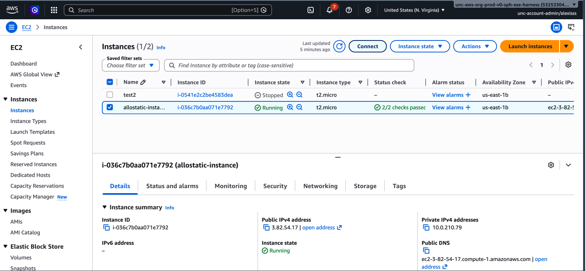
Note: EC2 Instance Connect requires your instance to have a public IP address and the correct security group rules allowing inbound SSH traffic on port 22.
Once connected by any of the above methods, you will see a command prompt indicating that you are now working inside your cloud instance and can begin running your analysis.
3. Creating a SageMaker Notebook
Amazon SageMaker provides a fully managed environment for data analysis and machine learning, removing the need to manually configure and connect to a virtual machine. Rather than working in a terminal, SageMaker allows you to work in a Jupyter Notebook, a familiar browser-based interface where you can write and run code interactively alongside text, figures, and outputs. This makes SageMaker particularly well suited for exploratory data analysis and iterative workflows.
Step 1: Navigate to SageMaker
Log in to the AWS Management Console and search for “SageMaker” in the search bar. Click on “Amazon SageMaker” in the results to open the SageMaker dashboard. Links to tutorials and documentation are included on this landing page.
Step 2: Open SageMaker Studio
From the landing page, click “Open” to launch SageMaker Studio Classic in a new browser tab.
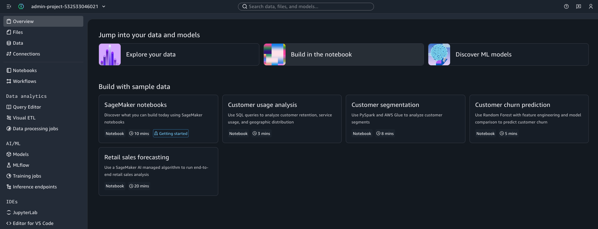
Step 3: Create a New Notebook
Once inside SageMaker Studio, click “Notebooks” in the left hand menu which will open a new page. The select “Create notebook” and you will be redirected to a new Jupyter Notebook.
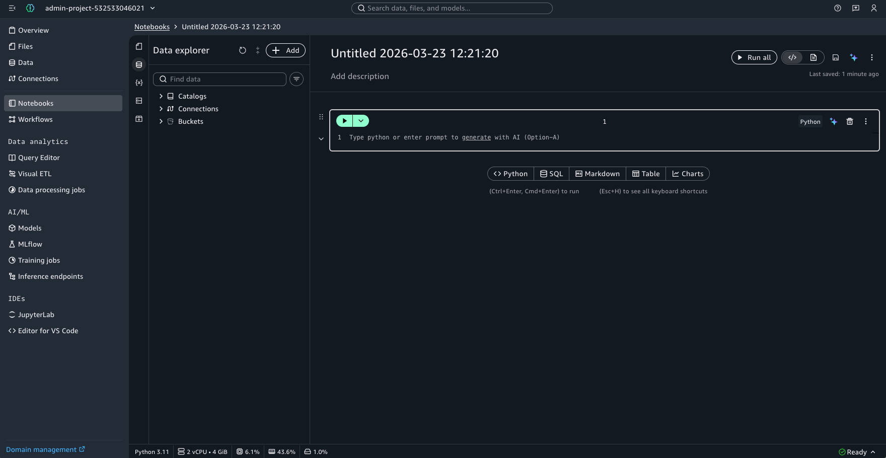
Step 4: Managing Your SageMaker Notebook
The specific properties of the notebook can be managed via the left-hand menu, represented by a series of icons. This menu provides access to several key configuration areas:
- Files & Data: View and manage the files and datasets shared with the notebook, including the ability to upload additional files from your local machine.
- Compute Instance: View and change the EC2 instance currently powering your notebook environment.
- Python Packages: Browse the Python packages currently installed in your environment, and search for and install additional packages as needed.
The currently selected instance type is also displayed at the top right of the notebook interface. Clicking on it allows you to switch instances based on the demands of your analysis. Choosing the right instance is important both for performance and cost management. A full list of SageMaker instance pricing can be found on the AWS SageMaker pricing page.
Best Practices
When working in AWS, keeping costs under control requires deliberate habits. A few key recommendations:
- Stop instances when not in use. EC2 instances continue to accrue charges as long as they are running, even if no computation is actively taking place. Always stop or terminate your instance when you are finished working.
- Be strategic about data transfers. AWS charges for data moving in and out of the cloud. Rather than uploading and downloading files repeatedly, prepare all your input data locally, upload everything at once, run your full analysis, and then download your results in a single batch.
- Monitor your usage. Use the AWS Cost Explorer and set up billing alerts to avoid unexpected charges. It is easy to lose track of running instances or stored data that is no longer needed.
- Clean up unused resources. Delete S3 objects, snapshots, and other resources you no longer need to avoid ongoing storage fees.
Dictionary of Terminology
- Elastic Compute Cloud (EC2): allows you to rent virtual servers, referred to as instances, with configurable amounts of central processing units (CPU), memory, storage, and networking capacity. These instances are the environments in which coding occurs.
- Amazon Simple Storage Service (S3): long-term data storage through AWS that keeps data safe and accessible regardless of whether your instance is running or not
- Amazon Elastic Block Store (EBS): local instance storage where data is only available while your instance is active and is used during computation to hold intermediate files and data that require fast read and write access.
- Secure Shell (SSH): allows you to connect to your instance from your local terminal and control it as if you were typing directly on it
Concluding Remarks
Cloud computing offers researchers a powerful and flexible alternative to traditional on-premises computing. By leveraging services like AWS S3 for storage and EC2 for computation, analyses that would be impractical on a local machine — due to data size, memory requirements, or processing time become manageable and reproducible. As cloud platforms continue to evolve and become more accessible, familiarity with these tools is increasingly valuable for researchers across disciplines. We encourage you to explore the NIH Cloud Lab and the broader AWS documentation to continue building these skills beyond this module.